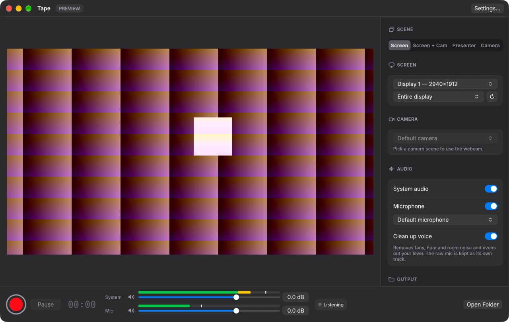

Record your screen and camera on a Mac.
Tape records your screen, webcam, microphone and system audio into one file. It keeps a replay buffer and streams to several platforms at once. Free and open source.
Download for MacmacOS 14 or later · Apple Silicon and Intel · How to open it the first time

What it does
Screen, camera and sound
Record a display or a single window with your webcam, mic and system audio in one .mov or .mp4.
Scenes
Screen, Screen + Cam, Presenter or Camera. Drag the camera overlay anywhere and pick its shape, border and shadow, live while recording.
Replay buffer
Keep the last 15 to 300 seconds in memory and save them with ⇧⌘S without stopping anything.
Stream everywhere
Go live to YouTube, Twitch, Kick or any RTMP or WHIP server, all at once from one encode. Stream keys stay in the Keychain.
Audio mixer
A fader, meter and mute for the mic and system audio. Changes apply live to the file, the replay buffer and streams.
Clean voice
Removes fans, hum and room noise and evens out your level. The raw mic is kept as its own track.
Mic check
Warns while you record if the mic is too quiet, too loud, cutting out or silent.
Camera file
Optionally saves the camera on its own, full frame, in step with the main recording for editing.
Built on Apple frameworks
ScreenCaptureKit, VideoToolbox and Metal. Hardware H.264, HEVC or ProRes, with no FFmpeg or Electron inside.
Install
- Download Tape.dmg, open it and drag Tape to Applications.
- Open Tape. macOS says it can't check Tape for malicious software. Click Done.
- Open System Settings → Privacy & Security, scroll to Security and click Open Anyway next to the message about Tape. Confirm with your password.
- Allow Screen Recording, Microphone and Camera when Tape asks.
Tape isn't notarised by Apple yet, so macOS asks you to confirm once. You only do this the first time. Until Tape is notarised, get new versions from this page or from Check for Updates…, which opens the latest release.
Build from source
You need Rust and the Xcode command line tools.
git clone https://github.com/Tinomuchenje/tape.git cd tape scripts/build.sh open dist/Tape.app